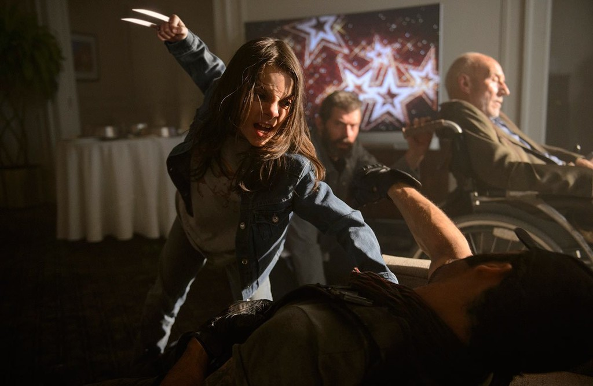

X-23, Laura es un clon femenino de Lobezno creado por una asociación relacionada con el proyecto Arma X original.
Laura fue criada para ser un arma viviente y una herramienta para la instalación, las únicas personas que la trataron con amabilidad fueron su Madre y su sensei. Cuando fue obligada a asesinar a ambos bajo el efecto de un activador de sentidos fue una experiencia realmente traumática para ella, quien se creo un sentimiento de autodesprecio y culpa. Para poder encontrar una salida para su depresión, ella empezó a cortase a si misma con sus garras, habito que continuo durante su adolescencia.También era propensa a tener ataques de extrema ira y violencia similar a la de su padre.
Durante mucha parte de su vida, Laura lucho contra su autodesprecio y el pensar que su pasado como asesina la hacían indigna de formar parte de los X-Men. Otra fuente de angustia para Laura también era que la consideran una persona real y que tenía un alma, debido a que toda su vida le enseñaron que simplemente era un clon imperfecto de Lobezno.
Con la ayuda de Logan y el resto de los X-Men, Laura lentamente fue capaz de superar sus traumas, lo que se vuelve mas notorio cuando deja se usar su nombre clave de X-23 y toma el nombre de Lobezno luego de la muerte de Logan.
Laura (También conocida como X-23) es un personaje que aparece en Logan.
Su origen se altera ligeramente para la película, específicamente, en los cómics que nació en Canadá de Sarah Kinney, mientras que en la película tiene una madre sin nombre, y nació en México en su lugar.
A lo largo de la película muestra un gran apego a Xavier que refleja a Logan, viéndolo como una figura de abuelo. Esto se muestra mientras están viendo "Shane" y durante su cena en el Munsons. Cuando conoce a Donald Pierce, intenta conseguir que se calme y se retraiga de sus garras. Esto refleja a William Stryker en X-Men 2, sin embargo, a diferencia de Stryker, Donald no logró calmar a Laura
Laura parecía tener un apego a los Cómics de X-Men, y al parecer los consideraba hechos, ya que se sugirió que ella previó Logan como se retrató en los dichos cómics, y Eden un lugar real.
Según el director James Mangold, hubo una escena de corte en la que Laura encuentra una foto de Jean Grey en la chaqueta de Logan y le pregunta si Jean es su madre, lo que llevó a Logan a arrugar la foto y tirarla.
Como Laura aún es joven, su curación no es tan eficiente como la de Logan. Esto se muestra durante su primer encuentro con los Reavers, ya que tomó varios segundos para el flujo de sangre para detener después de ser empalado, así como algunas heridas de bala para cerrar. Más tarde, se demuestra que fue sometida a anestesia, algo que se demostró que no podía sucederle a Logan en X2; Y en Orígenes, Stryker explicó que la curación de Logan era demasiado poderosa para que pudiera verse afectado por la anestesia.
Laura es interpretada por Dafne Keen en la pelicula de Logan, rol por el que recibió varios premios y nominaciones, incluida la obtención de un Premio Empire como Mejor Revelación. Su primer debut ha sido interpretando a Ana "Ani" Cruz Oliver en la serie de televisión Refugiados (2014-2015).
En 2019, comenzó a interpretar a Lyra Belacqua en la serie de televisión La materia oscura, por la que fue nominada a un premio BAFTA Cymru.
Actualmente participa en el nuevo proyecto de Star Wars, The Acolyte
